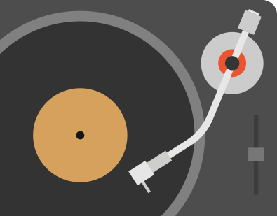
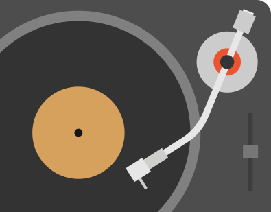

About Dom
Hello there, I am an aspiring Graphic Designer currently in my final year at Arts University Bournemouth. I have been pursuing this passion of mine from a very early age having unlocked the secrets and possibilites that lie within Adobe Photoshop and Illustrator by the age of fourteen, and since then broadening my skillset through different mediums of design, such as Photography, 3D Modelling, Sculpturing, Architecture and more. Over the years I have grown and matured as a designer however my attention to detail has never wavered in order to bring the best out of my work.
I have over seven years of educational and self taught experience in predominantly Graphic Design, from GCSE’s to my Bachelor’s Degree I have been on this path and I plan to go a lot further. One of my favourite aspects to design is typography and lettering, deeply inspired by the likes of Seb Lester, Neville Brody, Wim Crouwel and Stefan Sagmeister with how they edit, break up and puzzle together type in such beautiful forms. Please do not hesitate to get in contact if you have any questions about my work, myself or if you would like to work with me.

 
